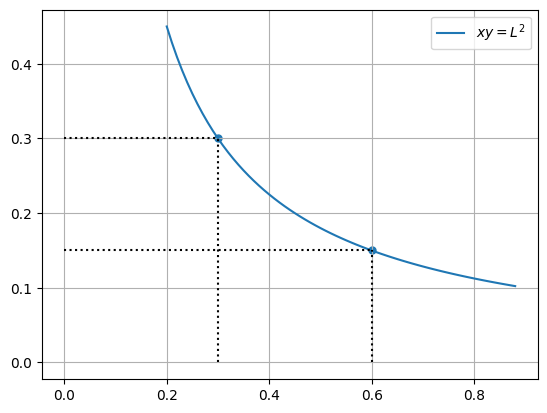
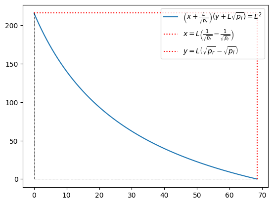
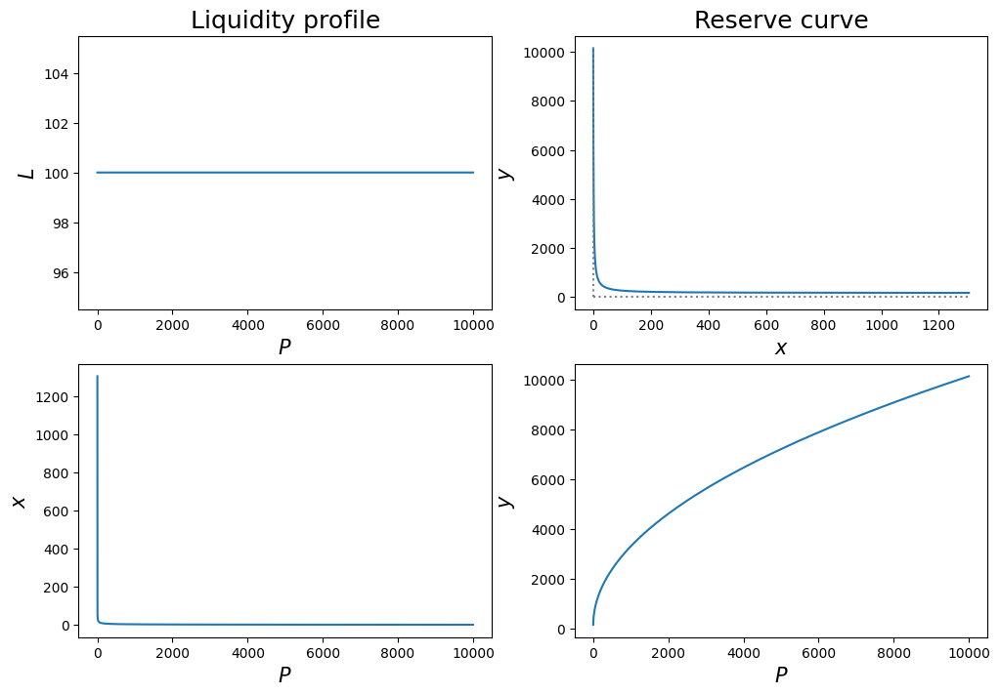
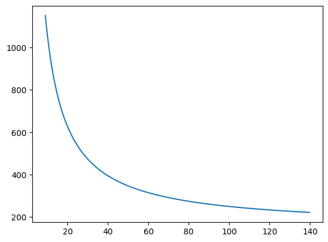
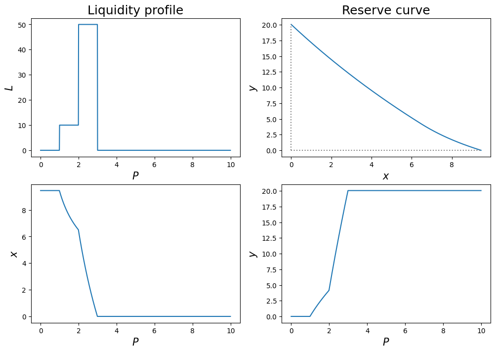
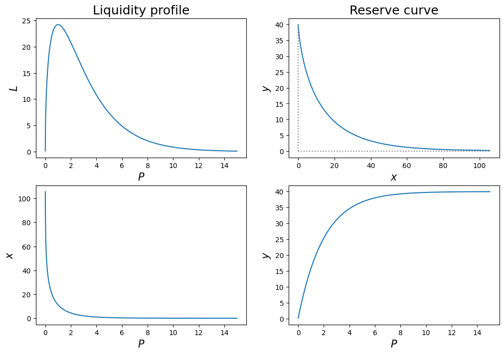

import numpy as np
import matplotlib.pyplot as pltTopics in Quantitative Finance, Summer 2025
Lecture 7: Mathematics behind AMM in DeFi
\[ \newcommand{\bea}{\begin{align}} \newcommand{\eea}{\end{align}} \newcommand{\supp}{\mathrm{supp}} \newcommand{\F}{\mathcal{F} } \newcommand{\cF}{\mathcal{F} } \newcommand{\E}{\mathbb{E} } \newcommand{\Eof}[1]{\mathbb{E}\left[ #1 \right]} \def\Cov{{ \mbox{Cov} }} \def\Var{{ \mbox{Var} }} \newcommand{\1}{\mathbf{1} } \newcommand{\p}{\partial} \newcommand{\PP}{\mathbb{P} } \newcommand{\Pof}[1]{\mathbb{P}\left[ #1 \right]} \newcommand{\QQ}{\mathbb{Q} } \renewcommand{\R}{\mathbb{R} } \newcommand{\DD}{\mathbb{D} } \newcommand{\HH}{\mathbb{H} } \newcommand{\spn}{\mathrm{span} } \newcommand{\cov}{\mathrm{cov} } \newcommand{\HS}{\mathcal{L}_{\mathrm{HS}} } \newcommand{\Hess}{\mathrm{Hess} } \newcommand{\trace}{\mathrm{trace} } \newcommand{\cL}{\mathcal{L} } \newcommand{\cG}{\mathcal{G} } \newcommand{\Xv}{X^{(v)}} \newcommand{\s}{\mathcal{S} } \newcommand{\cE}{\mathcal{E} } \newcommand{\ff}{\mathcal{F} } \newcommand{\hh}{\mathcal{H} } \newcommand{\bb}{\mathcal{B} } \newcommand{\dd}{\mathcal{D} } \newcommand{\g}{\mathcal{G} } \newcommand{\half}{\frac{1}{2} } \newcommand{\T}{\mathcal{T} } \newcommand{\bit}{\begin{itemize}} \newcommand{\eit}{\end{itemize}} \newcommand{\beq}{\begin{equation}} \newcommand{\eeq}{\end{equation}} \newcommand{\beas}{\begin{align*}} \newcommand{\eeas}{\end{align*}} \newcommand{\tr}{\mbox{tr}} \newcommand{\ee}[1]{{\mathbb{E}\left[{#1}\right]}} \newcommand{\eef}[1]{{\mathbb{E}\left[\left.{#1}\right|\cF_t\right]}} \newcommand{\eefm}[2]{{\mathbb{E}^{#2}\left[\left.{#1}\right|\cF_t\right]}} \renewcommand{\angl}[1]{{\langle{#1}\rangle}} \newcommand{\inn}[1]{{\langle{#1}\rangle}} \newcommand{\tL}{{\tilde L}} \]
Outline of Lecture 7
- Brief introduction to Automated Market Making (AMM) in decentralized finance (DeFi)
- Constant function market making (CFMM)
- Bonding curve
- Constant product market making (CPMM), Geometric mean market making (G3M) or Balancer, Curve
- Price impact under CFMM
- Impermanent Loss (IL) and Loss-versus-rebalance (LVR)
- Concentrated liquidity providing (CLP)
- Customized liquidity provision
- IL and LVR under CLP
- Empirical data
- Problems to be done
Automated Market Making
Automatic Market Makers (AMMs) are
- Algorithms that power decentralized exchanges (DEXs).
- Replace traditional order books with liquidity pools.
- Use mathematical formulas to determine asset prices.
How AMMs Work
- Users provide liquidity (crypto assets) to pools.
- Traders swap directly with the pool’s assets.
- Prices are determined by the ratio of assets within the pool.
- Key Benefits
- Permissionless: Anyone can trade or provide liquidity.
- Automated: No middlemen or order books needed.
- Always Available: 24/7 trading, regardless of market conditions.
AMM vs CLOB
- Automated market making are innovative solutions to the problems of decentralized exchanges. In the years prior to the implementation of AMMs, developers implemented Decentralized Exchanges (DEXs) by replicating traditional central limit order books (CLOB) used by centralized exchanges.
- The result was excessive network transaction fees and high latency due to the difficulty in managing and maintaining a huge amount of transactions on the chain. Fortunately, the implementation of AMMs solved the problems of excessive fees and low liquidity.
AMM vs CLOB
Compared to CLOBs, AMMs offer some advantages.
Efficient computation. They have minimal storage needs, and matching computations can be done quickly, typically via constant-time closed-from algebraic computations.
In a CLOB, on the other hand, matching engine calculations may involve complex data structures and computations that scale with the number of orders. Thus AMMs are uniquely suited to the severely computation- and storage-constrained environment of the blockchain.
CLOBs are not well-suited to a long-tail of illiquid assets. This is because they require the participation of active market markers. In contrast, AMMs mainly rely on passive liquidity providers (LPs).
Types of traders
There are two types of traders in an AMM pool.
- Liquidity provider (LP)
- Provide liquidity by adding coins simultaneously to the pool.
- Liquidity provision leaving the pool price/marginal exchange rate unaltered.
- Collects fee from the pool/swapper.
- Swapper
- Swap coins with the pool.
- Swaps implemented along the bonding curve.
- Pays fee to the pool/LP for each transaction.
注:
AMM 特别适合处理 长尾资产 (long-tail assets), 因为这些资产在 CLOB 中通常没有足够的市场参与者挂单. 但在 AMM 中, 只要有人提供了一点点流动性, 别人就能交易.
AMM 的工作机制:
| 角色 | 行为 | 收益 |
|---|---|---|
| Liquidity Provider (LP) | 向资金池中提供一对加密资产 (如 ETH 和 USDC) | 赚取交易费用 |
| Swapper | 向池中提供一种币并获取另一种币 (例如用 USDC 换 ETH) | 支付费用给 LP |
交易流程:
- LP 把一对币 (比如 ETH 和 USDC) 按一定比例加入资金池
- Swapper 用某种币进行交换, 自动通过一个 公式 (bonding curve) 计算价格
- 池子的资产比例改变, 价格随之自动更新
- 每次交易收取的手续费归 LP 所有, 激励他们继续提供流动性
| 维度 | AMM | CLOB |
|---|---|---|
| 机制 | 算法定价, 基于池中资产比例 | 人工挂单, 撮合买卖双方 |
| 效率 | 高效、可用性强 (24/7、无需撮合) | 需要实时撮合、依赖交易撮合引擎 |
| 链上表现 | 适合区块链, 计算开销小 | 不适合链上, 数据结构复杂、成本高 |
| 适合的资产类型 | 即使是冷门币也可以提供交易 | 冷门币缺乏挂单流动性, 交易困难 |
Constant function market making
- One of the most popular proctols utilized for AMM in DEX is the Constant Function Market Making (CFMM).
- We shall investigate the trading mechanism under CFMM.
Notations
- \(x_t\): number of risky asset, say ETH, at time \(t\) in the pool
- \(y_t\): number of numeraire, say USDC, at time \(t\) in the pool
- \(f\): bonding function
- \(L\): level of bonding function
- \(\displaystyle P:=-\frac{\mathrm{d}y_t}{\mathrm{d}x_t}\): infinitesimal/marginal rate of exchange or pool price at time \(t\)
- \(V_t\): value of the pool or LP’s wealth at time \(t\)
- \(1 - \gamma\): (proportional) transaction cost, typically \(\gamma = 99.7\%\).
- \(S_t\): exogenous reference price of the risky asset
Bonding curve
Consider the CFMM with bonding curve given by the level curve
\[ f(x, y) = L, \]
where \(x\) is regarded as the number of risk assets and \(y\) the number of numeraire in the liquidity pool. \(f\) is referred to as the bonding function and \(L\) as the level of bonding function.
Note
- Pricing is nonlinear in general.
- For the trading mechanism to be viable, \(f\) must satisfies certain conditions. For example, \(y\) as a function \(x\) implicitly defined via the bonding curve must be decreasing.
注: Bonding curve \(f(x,y)=L\) 给出风险资产与计价资产之间的数量关系.
Example: Constant product market making (CPMM)
In this case, the bonding function \(f\) and the bonding curve are given by
\[ f(x,y) := \sqrt{xy} = L \]
or equivalently
\[ xy = L^2 \quad \leftrightsquigarrow \quad \frac xL \cdot \frac yL = 1 \]
w, ell = 0.5, 0.3
dx = dy = 0.01
x = np.arange(0.2, 0.89, dx)
y = ell**2/x
#y = np.arange(0.01, 0.99, dy)
#X, Y = np.meshgrid(x, y)
#Z = X**w*Y**(1-w)
#CS = plt.contour(X, Y, Z, [ell])#, label=f'w={w}')
#plt.clabel(CS, inline=True, fontsize=10)
plt.plot(x, y, label=fr'$xy=L^2$')
plt.scatter([0.6, 0.3], [ell**2/0.6, ell**2/0.3], s=25)
plt.grid()
plt.legend()
plt.vlines(x=[0.3, 0.6], ymin=[0,0], ymax=[ell**2/0.3, ell**2/0.6], ls='dotted', color='k');
plt.hlines(y=[ell**2/0.3, ell**2/0.6], xmin=[0,0], xmax=[0.3, 0.6], ls='dotted', color='k');
Example: Geometric mean market making (G3Ms) or Balancer
In this case, the bonding function \(f\) and the bonding curve are determined by
\[ f(x,y) := x^\alpha y^{1-\alpha} = L \]
for some \(\alpha \in (0,1)\). Equivalently
\[ x^\alpha y^{1 - \alpha} = L \quad \leftrightsquigarrow \quad \left(\frac xL\right)^\alpha \cdot \left(\frac yL\right)^{1-\alpha} = 1 \]
Apparently, CPMM corresponds to the case \(\displaystyle \alpha = \frac12\).
Constant product market making
Uniswap v2
- Best For: Basic swaps of popular tokens (ETH, WBTC, stablecoins, etc.)
- Key Feature: Simplicity and wide asset support, ideal for beginners.
Balancer
- Best For: More flexibility in liquidity pools and trading less common assets.
- Key Features:
- Customizable pool weights (not just 50/50)
- Supports multiple assets per pool
注: 这是 常数乘积做市 (Constant Product Market Making, CPMM) 的代表性 AMM 协议:
- Uniswap v2: 使用公式为
- \(f(x,y) = \sqrt{xy} = L\)
- 适合基本的代币交换, 如 ETH, WBTC, 稳定币等
- 简单易用, 适合初学者
- Balancer:
- \(f(x,y) = x^\alpha y^{1-\alpha} = L\)
- 适合更灵活的流动性池和交易不太常见的资产
- 支持自定义池权重 (不只是 50/50)
- 支持多个资产在同一池中
Example: Curve
In this case, the bonding function and the bonding curve are given by
\[ f(x,y) = \alpha(x + y) - \frac\beta{xy} = L \]
Marginal exchange rate or marginal price
It follows from the implicit function theorem that the marginal price or the marginal exchange rate, denoted by \(P\), is defined as
\[ P := -\frac{\mathrm{d}y}{\mathrm{d}x} = \frac{f_x}{f_y}. \]
The marginal exchange rate \(P\) represents the price, or the amount of numeraire \(\mathrm{d}y\) that the trader/swapper pays to the pool in exchange of retrieving \(-\mathrm{d}x\) shares from the pool, when the reserve is \((x,y)\).
The trading/exchange must be done along the bonding curve \(f(x,y) = L\).
In general, \(P = P(x,y)\).
注: \(x\) 是风险资产的数量, \(y\) 是计价资产的数量.
当你从池子中拿出一小单位的某种币 (如 ETH) 时, 必须向池子支付多少单位的另一种币 (如 USDC) 来换取它.
Total traded price by line integral
Assume the current reserve is \((x_0, y_0)\), a swapper would like to purchase \(\Delta_x\) shares from the pool. We would like to determine how much of the numeraire should the swapper pay to the pool in exchange of the risk asset.
注: Swapper 为了从池子中购买 \(\Delta_x\) 单位的风险资产, 需要支付多少单位的计价资产. 这里设为 \(\Delta_y\).
This can be done by evaluating a line integral along the bonding curve. Let \(\gamma\) be the path connecting \((x_0, y_0)\) to \((x_0 + \Delta_x, y_0 + \Delta_y)\), where the amount \(\Delta_y\) is to be determined, along the bonding curve \(f(x,y) = L\). We have
\[ \Delta_y = \int_{\gamma} \mathrm{d} y = \int_0^1 \dot y_t \mathrm{d}t, \]
where we parametrize the curve as \(\gamma_t = (x_t, y_t)\) with \(f(x_t, y_t) = L\) for all \(t\). Thus, the averaged traded price is
注: \(\displaystyle \Delta_y = \int_{\gamma} \mathrm{d} y\) 的直观解释是: 从起点走到终点, 在 \(y\) 方向上走了多少距离 (也就是你总共支付了多少计价资产).
\[ \frac{\Delta_y}{\Delta_x} = \frac1{\Delta_x} \int_0^1 \dot y_t \mathrm{d}t. \]
Note that, since along the bonding curve \(\mathrm{d}y = -P\mathrm{d}x\), we have
\[ \int_\gamma \mathrm{d}y = -\int_\gamma P(x,y) \mathrm{d}x. \]
Line integral
Quotes from Wikipedia:
In mathematics, a line integral is an integral where the function to be integrated is evaluated along a curve. The terms path integral, curve integral, and curvilinear integral are also used; contour integral is used as well, although that is typically reserved for line integrals in the complex plane.
For some scalar field \({\displaystyle f\colon U\to \mathbb {R} }\) where \({\displaystyle U\subseteq \mathbb {R} ^{n}}\), the line integral along a piecewise smooth curve \({\displaystyle {\mathcal {C}}\subset U}\) is defined as
\[ {\displaystyle \int _{\mathcal {C}}f\,\mathrm{d}s=\int _{a}^{b}f\left(\mathbf {r} (t)\right)\left|\mathbf {r} '(t)\right|\,\mathrm{d}t,} \]
where \({\displaystyle \mathbf {r} \colon [a,b]\to {\mathcal {C}}}\) is an arbitrary bijective parametrization of the curve \({\displaystyle {\mathcal {C}}}\) such that \(\mathbf {r}(a)\) and \(\mathbf {r}(b)\) give the endpoints of \({\displaystyle {\mathcal {C}}}\) and \(a < b\). Here, and in the rest of the article, the absolute value bars denote the standard (Euclidean) norm of a vector.

Line integral of scalar field. Source: Wikipedia.
Example: CPMM
In this case, we have \(f(x,y) = \sqrt{xy} = L\). It follows that the marginal price \(P\) is given by
\[ P = P(x,y) = \frac{f_x}{f_y} = \frac yx. \]
Along the bonding curve \(xy = L^2\), we have
\[\begin{align*} \Delta_y &= \int_\gamma \mathrm{d}y = - \int_\gamma P \mathrm{d}x = - \int_\gamma \frac yx \mathrm{d}x. \end{align*}\]
Thus, if we parametrize the bonding curve \(f(x,y) = \sqrt{xy} = L\), denoted as \(\gamma\), by
\[\begin{align*} \gamma_t = (x_t, y_t) \end{align*}\]
for \(t \in [0,1]\), with \(x_0 = x_0\), \(x_1 = x_0 + \Delta_x\), \(y_0 = y_0\), and \(y_1 = y_0 + \Delta_y\).
Since \(f(x_t, y_t) = \sqrt{x_t y_t} = L\) for all \(t\), we have that
\[ y_t = \frac{L^2}{x_t} \]
It follows that
\[\begin{align*} \Delta_y &= - \int_\gamma \frac yx \mathrm{d}x = - \int_0^1 \frac{L^2}{x_t^2} \mathrm{d}x_t \\ &= \frac{L^2}{x_1} - \frac{L^2}{x_0} = L^2\left\{ \frac1{x_0 + \Delta_x} - \frac1{x_0} \right\} \\ &= \frac{L^2}{x_0} \left(\left\{1 + \frac{\Delta_x}{x_0}\right)^{-1} - 1 \right\} \approx -\frac{L^2}{x_0^2} \Delta_x \end{align*}\]
if \(|\Delta_x| \ll x_0\). Thus,
\[ -\frac{\Delta_y}{\Delta_x} \approx \frac{L^2}{x_0^2} = \frac{y_0}{x_0} \]
if \(|\Delta_x| \ll x_0\).
Note
- \(\Delta_y > 0\) since \(\Delta_x < 0\).
- Price impact depends not only on the traded amount but also the level \(L\) and the current pool reserve \(x_0\) or \(y_0\).
Sell price by line integral
Likewise, we can show that if a trader wants to retrieve \(\Delta_y\) numeraire from the pool, he must deposit
\[ \Delta_x = \int_\gamma \mathrm{d}x = -\int_\gamma \frac{\mathrm{d}y}P \]
shares of risky asset to the pool.
Price impact by line integral
The price impact \(\Delta P\) of trading \(\Delta_x\) shares with pool can be determined by the line integral
\[ \Delta P = \int_\gamma \mathrm{d}P = \int_\gamma P_x \mathrm{d}x + P_y \mathrm{d}y = \int_\gamma (P_x - P P_y) \mathrm{d}x = \int_\gamma \frac1{f_y}\left(f_{xx} -2Pf_{xy} + P^2 f_{yy} \right)\mathrm{d}x = \int_\gamma 2 P^{3/2} \kappa_h \mathrm{d}x \]
since \(\mathrm{d}y = -P \mathrm{d}x\) along \(\gamma\), the bonding curve \(f(x,y) = L\).
Example: CPMM
In this case, we have \(f(x,y) = \sqrt{xy} = L\) and \(\displaystyle P(x,y) = \frac yx\), thus
\[\begin{align*} P_x &= -\frac y{x^2}, \quad P_y = \frac1x. \end{align*}\]
It follows that
\[\begin{align*} \Delta P &= \int_\gamma P_x \mathrm{d}x + P_y \mathrm{d}y = -2\int_\gamma \frac{y}{x^2} \mathrm{d}x = -2L^2 \int_\gamma \frac1{x^3} \mathrm{d}x \\ &= L^2 \left\{\frac1{(x_0 + \Delta_x)^2} - \frac1{x_0^2}\right\} \\ &= \frac{L^2}{x_0^2} \left\{\left(1 + \frac{\Delta_x}{x_0} \right)^{-2} - 1 \right\} \\ &\approx -2 \frac{L^2}{x_0^2} \frac{\Delta_x}{x_0} = -2 \frac{y_0}{x_0} \frac{\Delta_x}{x_0} \end{align*}\]
if \(|\Delta_x| \ll x_0\).
Transformation between \((x,y)\) and \((L, P)\) in CPMM
Apparently, we have - from \((x,y)\) to \((L, P)\) \[ L = \sqrt{xy}, \quad P = \frac yx \]
- from \((L,P)\) to \((x, y)\) \[ x = \frac L{\sqrt P}, \quad y = L \sqrt{P} \]
Note
- It follows that the status of the liquidity pool can be characterized by either the pool reserve pair \((x,y)\) or the level-price pair \((L, P)\).
- Pool reserve \(x\) and \(y\) are proportional to \(L\).
- Later we will show that the level \(L\) in CPMM is equal to the (intrinsic) liquidity \(\ell\).
Value of the pool
Let \(f(x,y) = L\) be the bonding curve. Define the value of the pool \(V\) as
\[ V = Px + y \]
where recall that \(\displaystyle P = -\frac{\mathrm{d}y}{\mathrm{d}x} = \frac{f_x}{f_y}\). Note that we can regard pool reserve \((x,y)\) as a function of \(P\). Indeed, suppose \(x = \varphi(y, L)\) obtained by solving the equation \(f(x,y) = L\) for \(x\) in terms of \(y\) and \(L\). It follows that, by inverting the equation
\[ P = \frac{f_x(\varphi(y, L),y)}{f_y(\varphi(y, L), y)}, \]
\(y\) is regarded as a function of \(P\) (and \(L\)).
Impermanent loss (IL) aka Divergence Loss
- Liquidity provision faces the so called Impermanent Loss, also known as the Divergence loss or the Loss-versus-Holding risk.
- The key point is that in average the LP will be better off holding the coins static than providing them as liquidity to the pool, should there be no transaction fee paid to the LP.
- To wit, we provide a slightly different but equivalent argument as in Quantifying Loss in Automated Market Makers by Milionis, Moallemi, Roughgarden, and Zhang.
如果你不收手续费, 只是把代币投入池子做市, 那么你最终的资产价值平均而言是更低的, 还不如啥也不做, 静静持有代币. 当然现实中 AMM 是有交易手续费的, 而这些手续费就是 LP 收益的来源, 也是抵御无常损失的手段.
- Assume zero interest.
- \(P_0\): pool price at time \(0\)
- An LP possesses \(x_0 = x(P_0)\) of \(X\) coins and \(y_0 = y(P_0)\) of \(Y\) coins
- He is considering whether depositing the coins as liquidity to a CFMM pool is profitable.
Should he hold the position and stay put without trading, the value of his position at time \(t\), denoted by \(H_t\), satisfies
\[ \mathrm{d}H_t = x(P_0)\mathrm{d}P_t \quad \Longrightarrow \quad H_t := x_0 P_t + y_0. \]
On the other hand, if he deposits the coins to the pool, the value of his pool reserve at time \(t\) is given by
\[ V_t = V(P_t) = x_tP_t + y_t = x(P_t) P_t + y(P_t). \]
As \(P_t\) evolves, Ito’s formula implies that
\[ \mathrm{d}V_t = V'(P_t) \mathrm{d}P_t + \frac12 V''(P_t) \mathrm{d}\inn{P}_t = x(P_t) \mathrm{d}P_t + \frac12 V''(P_t) \mathrm{d}\inn{P}_t \]
since
\[ V'(P) = \frac{\mathrm{d}}{\mathrm{d}P}\left(P x + y\right) = x + P\frac{\mathrm{d}x}{\mathrm{d}P} + \frac{\mathrm{d}y}{\mathrm{d}P} = x. \]
Note
- \(\inn{P}_t\): quadratic variation of \(P_t\)
- Recall that \(\displaystyle P = -\frac{\mathrm{d}y}{\mathrm{d}x} = -\frac{\mathrm{d}y/\mathrm{d}P}{\mathrm{d}x/\mathrm{d}P}\).
It follows that the so called impermanent loss, defined by \({\rm IL}_t := H_t - V_t\), satisfies
\[ \mathrm{d}{\rm IL}_t = \mathrm{d}H_t - \mathrm{d}V_t = \left\{x(P_0) - x(P_t)\right\} \mathrm{d}P_t - \frac12 V''(P_t) \mathrm{d}\inn{P}_t \]
or equivalently,
\[ {\rm IL}_t = H_t - V_t = \int_0^t \left\{x(P_0) - x(P_s)\right\} \mathrm{d}P_s - \int_0^t\frac12 V''(P_s) \mathrm{d}\inn{P}_s. \]
Note that, since \[ V''(P) = x'(P) = -\frac12 \frac{\ell(P)}{P^{3/2}} \leq 0, \]
we have
\[ \Eof{{\rm IL}_t} = -\Eof{\int_0^t\frac12 V''(P_s) \mathrm{d}\inn{P}_s} \geq 0 \]
should \(P_t\) be a martingale. In other words, in average the agent is better off in holding the coins than depositing them to the pool.
In fact, regarding \(H\) and \(V\) as functions of \(P\), recall that \[\begin{align*} & V'(P) = x(P) \\ & V''(P) = x'(P) = -\frac12 \frac{\ell(P)}{P^{3/2}} < 0 \end{align*}\] It follows that \(V\) is an increasing and concave function of \(P\). Note that \(H\) is tangent to \(V\) at \(P_0\), hence \(H(P) \geq V(P)\) for all \(P\) since \(V\) is concave. Specifically, \[\begin{align*} & V(P) - H(P) \\ &= V(P) - x_0 P - y_0 \\ &= V(P) - x_0 P_0 + x_0 P_0 - x_0 P - y_0 \\ &= V(P) - V(P_0) + x_0 (P_0 - P) \\ &= V(P) - \left\{ V(P_0) + V'(P_0) (P - P_0) \right\} \\ &\leq 0 \end{align*}\] for all \(P\) since \(V\) is concave.
Loss-versus-rebalance (LVR)
A slightly more detailed analysis given in Quantifying Loss in Automated Market Makers shows that the term involving the quadratic variation of \(P_t\) in the equation of \({\rm IL}_t\) can be attributed to the so called loss-versus-rebalance.
Let \(R_t\) be the self-financing strategy that holds \(x(P_t)\) in risky asset at time \(t\) with \(R_0 = x_0 P_0 + y_0\). Self-financing implies that
\[ \mathrm{d}R_t = x(P_t) \mathrm{d}P_t. \]
Define the loss-versus-rebalance as \({\rm LVR}_t := R_t - V_t\). It follows that
\[ \mathrm{d}{\rm LVR}_t := \mathrm{d}R_t - \mathrm{d}V_t = -\frac12 V''(P_t) \mathrm{d}\inn{P}_t \geq 0 \]
again since \(V''(P) = x'(P) \leq 0\). It follows that
\[ {\rm IL}_t = \int_0^t \left\{x(P_0) - x(P_s)\right\} \mathrm{d}P_s + {\rm LVR}_t. \]
Thus, the impermanent loss consists of a martingale component, which can be “delta-hedged” by dynamically holding \(x(P_0) - x(P_t)\) shares of the risk asset (the \(X\) coin), and a positive drift named loss-versus-rebalance.
🧠: 分解无常损失 IL 的来源
- \(R_t\): 自融资策略, 持有 \(x(P_t)\) 风险资产
- \(H_t\): 静态持有的资产价值
- \(V_t\): 提供流动性后的资产价值
Impermanent Loss = 可对冲的价格波动损失 (martingale) + 无法避免的 rebalance 损耗 (LVR).
其中 LVR 来源于 AMM 沿着 bonding curve 自动换币导致的非对称损失, 价格波动越大, LVR 越大.
Example: IL and LVR in CPMM
Consider the CPMM in which \(f(x,y) = \sqrt{xy}\). In this case, \(\displaystyle P = \frac{f_x}{f_y} = \frac yx\). We have, since \(xy = L^2\),
\[ P = \frac yx = \frac y{\frac{L^2}y} = \frac{y^2}{L^2} \quad \Longrightarrow \quad y = L\sqrt P. \]
Likewise, one can show that
\[ x = \frac L{\sqrt P}. \]
Hence, the value \(V\) is given by
\[ V(P) = P x + y = 2 L \sqrt P. \]
Hence, \[\begin{align*} & H(P) - V(P) \\ &= x_0 P + y_0 - 2L\sqrt P \\ &= \frac{L}{\sqrt{P_0}} P + L\sqrt{P_0} - 2 L \sqrt P \\ &= \frac{2L}{\sqrt{P_0}}\left\{ \frac{P + P_0}2 - \sqrt{P P_0} \right\} &\geq& 0 \end{align*}\] and the equality holds if and only if \(P = P_0\).
Thus, by applying Ito’s formula, the evolution of the value \(V_t\) is given by
\[ \mathrm{d}V_t = \frac L{\sqrt{P_t}} \mathrm{d}P_t - \frac14 \frac L{\sqrt{P_t^3}} \mathrm{d}\inn{P}_t, \]
where \(\inn{P}_t\) denotes the quadratic variation of pool price \(P_t\).
On the other hand, should we hold a in position \(x_t\) a self-financing manner the value \(R_t\) is given by
\[ \mathrm{d}R_t = x_t \mathrm{d}P_t = \frac L{\sqrt{P_t}} \mathrm{d}P_t \]
Thus, we end up with
\[ \mathrm{d}{\rm LVR}_t = \mathrm{d}R_t - \mathrm{d}V_t = \frac L4 \frac{\mathrm{d}\inn{P_t}}{\sqrt{P_t^3}} \]
as well as
\[ {\rm IL}_t = \int_0^t (x_0 - x_s) \mathrm{d}P_s + \frac L4 \int_0^t \frac{\mathrm{d}\inn{P_s}}{\sqrt{P_t^3}}. \]
Concentrated liquidity provision (CLP)
- In CFMM, the bonding curve dictates the rule of trading and pricing, which is inconsistent with the notion of free market.
- In the CPMM pools, LPs provide reserves to the pool for swapper to swap at any price level and their contributions to the pool are measured in liquidity unit \(L\).
- The feature of concentrated liquidity provision provides LP the ability to allocate liquidities to be used only when swaps occurring in a designated price interval, say, \([p_l, p_r]\) of his choice.
- The result is a market induced liquidity profile which liberates the trading and pricing in AMM from the dictation of bonding curve in CFMM.
- Liquidity providers willing to actively manage positions for maximum returns.
- Key Features:
- Users provide liquidity within specific price ranges.
- Enables limit-order-like trades.
- Increases capital efficiency and potential higher earnings for LPs.
注:
CLP 的核心思想是:
流动性提供者只在指定价格区间 (如 \([p_l, p_r]\)) 内提供流动性.
这意味着:
- 如果当前交易价格不在这个区间, LP 的资金就不会被动用;
- 一旦市场价格进入 LP 设置的价格区间, LP 才会开始“参与做市”并赚取手续费;
- 类似于限价挂单 (limit order);
- 由 LP 主动决定在哪个价格区间承担风险、赚手续费.
Comparison with Traditional Limit Order Books
Uniswap v3 can be seen as a hybrid of a constant function market maker (CFMM) and a traditional electronic limit order book (LOB), which allows market participants to specify quantities of assets they wish to trade at specified prices and maintains a list of outstanding buy and sell orders. The concentrated liquidity feature of Uniswap v3 allows for the creation of LP positions that function similarly to limit orders in LOBs, bridging the gap in expressiveness that exists between simple CFMMs and more complex LOBs, which can approximate any demand curve but require more complex state descriptions.
While a narrow-range Uniswap v3 LP position shares the goal of executing trades at preferred price levels with traditional limit orders in LOBs, the underlying mechanisms and characteristics differ significantly.
A key distinction lies in how the price is specified. Uniswap v3 LPs define a price range, offering liquidity across a continuum of prices, whereas LOBs rely on specific, discrete price points for each order.
Liquidity provision also differs fundamentally. In Uniswap v3, liquidity within a defined range is continuous and formula-driven, meaning it’s available at any price within the range according to the bonding curve. In contrast, LOB liquidity is offered in discrete quantities at specific price levels.
Operational Mechanisms and Trade Execution: Uniswap v3 and LOBs differ in their operational mechanisms and trade execution processes. Uniswap v3 operates as an AMM, using a constant product formula (adjusted for the price range) to facilitate swaps, which occur at any price within the LP’s range until the provided liquidity is utilized. Conversely, LOBs function by matching buy and sell orders, executed through a greedy matching process at the specified price or better.
Behavior with Market Price Movements: When the market price moves, the behavior of positions also differs significantly. If the market price moves out of a Uniswap v3 LP’s defined range, the position becomes inactive, holding a specific asset composition until the price returns. This necessitates active position withdrawal by the LP to avoid a “reversal” of their intended trade. In LOBs, limit orders remain in the book until filled or actively cancelled by the user, regardless of market price fluctuations.
CFMM (如 Uniswap v2) 是基于公式 (如 \(xy = k\)) 的自动做市;
LOB 是传统的中心化撮合系统, 每笔订单都是“买入/卖出 某个数量 at 某个价格”;
Uniswap v3 引入的“集中流动性”允许 LP 指定价格区间, 模拟出在某个价位附近挂单的效果 → 这就桥接了 CFMM 和 LOB 的表达能力差距.
CLP and contribution to pool reserve
Assume an LP would like to provide liquidity \(L\) for the price range \([p_l, p_r]\) with \(0 < p_l < p_r < \infty\). He is required to deposit as reserves to the pool \(x\) of the \(X\) coins and \(y\) of \(Y\) coins according to
- \(P \in [p_l, p_r]\) \[ x = L \left(\frac1{\sqrt P} - \frac1{\sqrt{p_r}} \right), \qquad y = L \left(\sqrt P - \sqrt{p_l} \right); \]
- \(P > p_r\) \[ x = 0, \qquad y = L \left(\sqrt{p_r} - \sqrt{p_l} \right); \]
- \(P < p_l\) \[ x = L\left(\frac1{\sqrt{p_l}} - \frac1{\sqrt{p_r}}\right), \qquad y = 0. \]
Note
- The bonding curve is natually in the canonical parametrization.
CLP and contribution to pool reserve
The provision of \(L\) units of liquidity to the pool as a function of pool price \(p\) can thus be summarized neatly as follows.
\[\begin{align*} x(p) &= L \left(\frac1{\sqrt p} - \frac1{\sqrt p_r} \right)^+ - L \left(\frac1{\sqrt p} - \frac1{\sqrt p_l} \right)^+, \\ y(p) &= L \left(\sqrt p - \sqrt p_l \right)^+ - L \left(\sqrt p - \sqrt p_r \right)^+. \end{align*}\]
Furthermore, for \(p \in [p_l, p_r]\), by eliminating the parameter \(p\), the reserve/bonding curve is given by
\[ \left( x + \frac L{\sqrt{p_r}}\right)\left( y + L\sqrt{p_l} \right) = L^2 \leftrightsquigarrow \left( \frac xL + \frac1{\sqrt{p_r}}\right)\left( \frac yL + \sqrt{p_l} \right) = 1. \]
Note
- In CPMM, the bonding curve never touches the \(x\)-axis nor the \(y\)-axis.
- In CLP, if there is only a sole LP who provides liquidity \(L\) in the price range \([p_l, p_r]\), the bonding curve intersects the \(x\)-axis at \(x^* = L \left(\frac1{\sqrt p_l} - \frac1{\sqrt p_r}\right)\) and the \(y\)-axis at \(y^*=L\left({\sqrt p_r} - {\sqrt p_l}\right)\). Beyond those two points, no swaps are possible.
L, pl, pr = 100, 1, 10
xx = lambda p: L*(1/np.sqrt(p) - 1/np.sqrt(pr))
yy = lambda p: L*(np.sqrt(p) - np.sqrt(pl))
p = np.arange(pl, pr, 0.01)
x, y = xx(p), yy(p)
plt.figure()
plt.plot(x, y, label=r'$\left(x + \frac{L}{\sqrt{p_r}}\right)(y + L \sqrt{p_l}) = L^2$')
plt.vlines(x=x.max(), ymin=0, ymax=y.max(), color='r', ls='dotted', label=r'$x=L\left(\frac{1}{\sqrt{p_l}}-\frac{1}{\sqrt{p_r}}\right)$')
plt.hlines(y=y.max(), xmin=0, xmax=x.max(), color='r', ls='dotted', label=r'$y=L\left(\sqrt{p_r}-\sqrt{p_l}\right)$')
plt.vlines(x=0, ymin=0, ymax=y.max(), color='k', lw=0.5, ls='dashdot')
plt.hlines(y=0, xmin=0, xmax=x.max(), color='k', lw=0.5, ls='dashdot')
plt.legend();#loc='lower left');
Additivity of coins and liquidity
Suppose LP1 is willing provide liquidity \(L_1\) in the price range \([p_l^1, p_r^1]\) and LP2 for \(L_2\) in the price range \([p_l^2, p_r^2]\). That gives us the liquidity profile
\[ L(p) = L_1 \1_{[p_l^1, p_r^1]}(p) + L_2 \1_{[p_l^2, p_r^2]}(p) \]
which translate to the reserve curve being given by
\[\begin{split} & x(p) = L_1 \left(\frac1{\sqrt p} - \frac1{\sqrt{p_r^1}} \right)^+ - L_1 \left(\frac1{\sqrt p} - \frac1{\sqrt{p_l^1}} \right)^+ + L_2 \left(\frac1{\sqrt p} - \frac1{\sqrt{p_r^2}} \right)^+ - L_2 \left(\frac1{\sqrt p} - \frac1{\sqrt{p_l^2}} \right)^+ \\ & y(p) = L_1 \left(\sqrt p - \sqrt{p_l^1} \right)^+ - L_1 \left(\sqrt p - \sqrt{p_r^1} \right)^+ + L_2 \left(\sqrt p - \sqrt{p_l^2} \right)^+ - L_2 \left(\sqrt p - \sqrt{p_r^2} \right)^+ \end{split}\]Note
- Unfortunately, there is no simple expression for bonding curve by “eliminating the parameter”.
Pool reserve as payoff for portfolio of call options
By the change of variable \(s = \frac1{\sqrt p}\), the equation for \(x\) becomes
\[ x\left(\frac1{s^2}\right) = L_1 \left(s - s_r^1 \right)^+ - L_1 \left(s - s_l^1\right)^+ + L_2 \left(s - s_r^2 \right)^+ - L_2 \left(s - s_l^2 \right)^+. \]
Note that the right hand side is simply the payoff function for the portoflio of call options: long \(L_1\) and \(L_2\) calls struck respectively at \(s_r^1\) and \(s_r^2\), short \(L_1\) and \(L_2\) calls struck at \(s_l^1\) and \(s_l^2\), respectively. We can thus rewrite this expression in terms of (Lebesgue) integral as
\[ x\left(\frac1{s^2}\right) = \int_{\R^+} (s - k)^+ \mathrm{d}\tL(k) = \int_{[0, s]} (s - k) \mathrm{d}\tL(k), \]
where \(\mathrm{d}\tL\) is a signed measure given by the sum of signed Dirac measures (point masses)
\[ \mathrm{d}\tL(k) = L_1\{\delta(s_r^1) - \delta(s_l^1)\} + L_2\{\delta(s_r^2) - \delta(s_l^2)\}. \]
Let \(\tL(k) = \int_{[0,k]} \mathrm{d}\tL(\kappa)\), i.e., the distribution function of \(\mathrm{d}\tL\). Then, integration by parts implies that
\[\begin{split} x\left(\frac1{s^2}\right) &= (s - k) \tL(k)|_0^s + \int_{[0, s]} \tL(k) \mathrm{d}k = \int_{[0, s]} \tL(k) \mathrm{d}k \end{split}\]assume \(\tL(0) = 0\).
Transforming back to the price space, let \(k = \frac1{\sqrt q}\). We have
\[\begin{split} x(p) &= x\left(\frac1{s^2}\right) = \int_0^{\frac1{\sqrt p}} \left(\frac1{\sqrt p} - k\right) \mathrm{d}\tL(k) \\ &= \frac1{\sqrt p} \tL\left(\frac1{\sqrt p}\right) - \int_0^{\frac1{\sqrt p}} k \mathrm{d}\tL(k) \\ &= \frac1{\sqrt p} \tL\left(\frac1{\sqrt p}\right) + \int_p^\infty \frac1{\sqrt q} \mathrm{d}\tL\left( \frac1{\sqrt q} \right) \\ &= \frac1{\sqrt p} L(p) + \int_p^\infty \frac1{\sqrt q} \mathrm{d}L(q) \end{split}\]where apparently \(L(p) := \tL\left( \frac1{\sqrt p} \right)\).
In fact, the transformation \(p = \frac1{s^2}\), pull-back the measure \(\mathrm{d}\tL\) in the \(s\)-space back to the measure \(\mathrm{d}L\) in the \(p\)-space as
\[ dL(p) = -\frac12 p^{-\frac32}\mathrm{d}\tL\left( \frac1{\sqrt p}\right) \]
or equivalently \(L(p) = \tL\left( \frac1{\sqrt p} \right)\)
Likewise, by the change of variable \(s = \sqrt p\), the equation for \(y\) can be obtained as
\[ y(s^2) = \int_{\R^+} (s - k)^+ \mathrm{d}L(k), \]
where
\[\begin{split} \mathrm{d}L(k) &= L_1\{\delta(s_l^1) - \delta(s_r^1)\} + L_2\{\delta(s_l^2) - \delta(s_r^2)\} \\ &= L_1\left\{ \delta\left(\sqrt{p_l^1}\right) - \delta\left(\sqrt{p_r^1}\right)\} + L_2\{\delta\left(\sqrt{p_l^2}\right) - \delta\left(\sqrt{p_r^2}\right) \right\} \end{split}\]and
\[\begin{split} y\left(s^2\right) &= \int_{[0, s]} L(k) \mathrm{d}k \end{split}\]Also, by the change of variable \(k=\sqrt q\), we have
\[\begin{split} y(p) &= \int_0^{\sqrt p} \left( \sqrt p - k \right) \mathrm{d}L(k) \\ &= \sqrt p \tL\left(\sqrt p\right) - \int_0^{\sqrt p} \sqrt q \mathrm{d}\tL(\sqrt q) \\ &= \sqrt p L(p) - \int_0^p \sqrt q \mathrm{d}L(q), \end{split}\]where apparently \(L(p):= \tL(\sqrt p)\).
Liquidity profile
Assume that \(L = L(P)\), i.e., liquidity depends on the infinitesimal rate of exchange \(P\), which we shall refer to as the liquidity profile.
Note
- Mathematically, we can regard \(\mathrm{d}L(p)\) as a (\(\sigma\)-finite) signed measure over \([0, \infty)\). Thus, \(L\) is the associated cdf for the measure \(\mathrm{d}L\).
Summary: Conversion between liquidity profile and pool reserves
Finally, by applying integration by parts, pool reserve \((x,y)\) are given in terms of the infinitesimal rate of exchange \(P\) as
\[\begin{align*} & x(P) = \frac12 \int_P^\infty L(p) p^{-\frac32} \mathrm{d}p \\ & y(P) = \frac12 \int_0^P L(p) p^{-\frac12} \mathrm{d}p \\ \end{align*}\]
Apparently, we have
\[ \frac{\mathrm{d} y}{\mathrm{d}x} = \frac{\frac{\mathrm{d}y}{\mathrm{d}P}}{\frac{\mathrm{d}x}{\mathrm{d}P}} = -P, \]
In other words, the infinitesimal rate of exchange \(P\) is equal to the negative slope of tangent of the reserve curve.
Note
- This is exactly the canonical parametrization of a bonding curve!
- Recall that \(L\) is the intrinsically defined liquidity of the bonding curve.
Monotonicity and convexity of bonding curve
It follows immediately that, since
\[\begin{split} & \frac{\mathrm{d}y}{\mathrm{d}x} = -P < 0 \\ & \frac{\mathrm{d}^2 y}{\mathrm{d}x^2} = \frac{\frac1{\mathrm{d}P}\left(\frac{\mathrm{d}y}{\mathrm{d}x}\right)}{\frac{\mathrm{d}x}{dP}} = \frac{-1}{-\frac{L(P)}{2P^{\frac32}}} = \frac{2P^{\frac32}}{L(P)} = 2\kappa_h(P) \, P^{3/2} > 0, \end{split}\]the bonding curve is decreasing and convex.
Illustration for the conversion of liquidity profile to reserve
For example, if the liquidity profile is given by
\[ L(p) = k_1 \1_{[a, b)}(p) + k_2 \1_{[b, c)}(p) \]
for some positive constants \(k_1, k_2\). Then, we have
\[ \mathrm{d}L(p) = k_1 \delta(p - a) \mathrm{d}p + (k_2 - k_1)\delta(p - b) \mathrm{d}p - k_2 \delta(p-c) \mathrm{d}p. \]
By simply carrying out the integrations, one obtains
- for \(P \geq c\), apparently
\[ x = 0; \]
- for \(b \leq P < c\)
\[ x = \frac{L(P)}{\sqrt P} + \int_P^\infty \frac1{\sqrt p}\mathrm{d}L(p) = \frac{k_2}{\sqrt P} - \frac{k_2}{\sqrt c} = k_2 \left(\frac1{\sqrt P} - \frac1{\sqrt c}\right) \]
- for \(a \leq P < b\)
\[\begin{align*} x &= \frac{L(P)}{\sqrt P} + \int_P^\infty \frac1{\sqrt p}\mathrm{d}L(p) = \frac{k_1}{\sqrt P} + (k_2 - k_1) \left(\frac1{\sqrt b} - \frac1{\sqrt c}\right) - \frac{k_2}{\sqrt c} \\ &= k_1 \left(\frac1{\sqrt P} - \frac1{\sqrt b}\right) + k_2 \left(\frac1{\sqrt b} - \frac1{\sqrt c}\right) \end{align*}\]
- for \(P < a\)
\[\begin{align*} x &= \frac{L(P)}{\sqrt P} + \int_P^\infty \frac1{\sqrt p}\mathrm{d}L(p) = \frac{k_1}{\sqrt a} + \frac{k_2 - k_1}{\sqrt b} - \frac{k_2}{\sqrt c} \end{align*}\]
Similarly, as for \(y\) we have
- for \(P \leq a\), apparently
\[ y = 0; \]
- for \(a < P \leq b\)
\[ y = \sqrt P L(P) - \int_0^P \sqrt p \mathrm{d}L(p) = k_1 \left(\sqrt P - \sqrt a \right) \]
- for \(b < P \leq c\)
\[\begin{align*} y &= \sqrt P L(P) - \int_0^P \sqrt p \mathrm{d}L(p) = k_2 \sqrt P - k_1 \sqrt a - (k_2 - k_1)\sqrt b \\ &= k_1 \left(\sqrt b - \sqrt a\right) + k_2 \left(\sqrt P - \sqrt b\right) \end{align*}\]
- for \(P > c\)
\[\begin{align*} y &= -k_1 \sqrt a - (k_2 - k_1)\sqrt b + k_2\sqrt c = k_1\left(\sqrt b - \sqrt a\right) + k_2\left(\sqrt c - \sqrt b\right) \end{align*}\]
Create a python class for ploting liquidty profile and reserve curve
import matplotlib.pyplot as plt
import numpy as np
import scipy.stats as ss
class LiquidityReservePlot():
'''
L = liquidity profile
range/interval for P = [start=0, end=10]
'''
def __init__(self, L, start=0.00001, end=10):
self.L, self.start, self.end = L, start, end
self.x1 = lambda p: self.L(p)/2/p**1.5
self.y1 = lambda p: self.L(p)/2/np.sqrt(p)
dP = 0.01
P = np.arange(self.start, self.end, dP)
# numerical intergration
x = (self.x1(P).sum() - self.x1(P).cumsum())*dP
y = self.y1(P).cumsum()*dP
self.x, self.y = x, y
#plot
plt.figure(figsize=(12, 8))
plt.subplot(2, 2, 1)
plt.plot(P, self.L(P))
plt.title('Liquidity profile', fontsize=18)
plt.xlabel(r'$P$', fontsize=15)
plt.ylabel(r'$L$', fontsize=15)
plt.subplot(2, 2, 2)
plt.plot(x, y)
plt.title('Reserve curve', fontsize=18)
plt.hlines(y=0, xmin=0, xmax=x.max(), color='grey', ls='dotted')
plt.vlines(x=0, ymin=0, ymax=y.max(), color='grey', ls='dotted')
plt.xlabel(r'$x$', fontsize=15)
plt.ylabel(r'$y$', fontsize=15)
plt.subplot(2, 2, 3)
plt.plot(P, x)
plt.xlabel(r'$P$', fontsize=15)
plt.ylabel(r'$x$', fontsize=15)
plt.subplot(2, 2, 4)
plt.plot(P, y)
plt.xlabel(r'$P$', fontsize=15)
plt.ylabel(r'$y$', fontsize=15);
def __call__(self):
passConstant liquidity profile - CPMM, Uniswap v2
# constant liquidity profile
L = lambda p: 100*(p > 0)
ex1 = LiquidityReservePlot(L, end=10_000);
start, end = 50, 10000
plt.plot(ex1.x[start:end], ex1.y[start:end]);
Piecewise constant liquidity profile, finitely supported
a, b, c = 1, 2, 3
k1, k2 = 10, 50
L = lambda p: k1*(p >= a) + (k2 - k1)*(p >= b) - k2*(p > c)
LiquidityReservePlot(L);
Continuous liquidity profile
L = lambda p: 100*ss.chi2.pdf(p, df=3)
LiquidityReservePlot(L, end=15);
Note
- We can calibrate the model to fit either the liquidity profile or the bonding curve.
- If both are observable, they should be consistent; otherwise, arbitrageable?
What are the IL and LVR in this framework?
Recall that the relation between the reserve in coins \(X\) and the liquidity profile \(L\) is given by
\[ x = \frac12 \int_P^\infty L(p)p^{-\frac32} \mathrm{d}p. \]
Applying Ito’s formula yields
\[\begin{split} \mathrm{d}x_t =& \mathrm{d}\left\{\frac12 \int_{P_t}^\infty L_t(p)p^{-\frac32} \mathrm{d}p \right\} \\ =& \frac12 \int_{P_t}^\infty \mathrm{d}L_t(p)p^{-\frac32} \mathrm{d}p \\ &- \frac12 L_t(P_t){P_t}^{-\frac32} \mathrm{d}P_t + \frac12 \left\{-\frac12 P_t L_t'(P_t)+ \frac34 L_t(P_t)\right\} P_t^{-\frac52} \mathrm{d}\inn{P}_t \\ &- \frac14 L_t(P_t)P_t^{-3/2}\int_{P_t}^\infty \mathrm{d}\inn{P_t,L_t(p)} p^{-\frac32} \mathrm{d}p \end{split}\]Likewise, for \(y_t\) we have
\[\begin{split} \mathrm{d}y_t =& \mathrm{d}\left\{\frac12 \int_0^{P_t} L_t(p)p^{-\frac12} \mathrm{d}p \right\} \\ =& \frac12 \int_0^{P_t} \mathrm{d}L_t(p)p^{-\frac12} \mathrm{d}p \\ &+ \frac12 L_t(P_t){P_t}^{-\frac12} \mathrm{d}P_t + \frac12 \left\{\frac12 P_t L_t'(P_t) - \frac14 L_t(P_t)\right\} P_t^{-\frac32} \mathrm{d}\inn{P}_t \\ &+ \frac14 L_t(P_t)P_t^{-1/2}\int_0^{P_t} \mathrm{d}\inn{P_t,L_t(p)} p^{-\frac12} \mathrm{d}p. \end{split}\]It follows that the evolution of pool value \(V_t = P_t x_t + y_t\) is given by
\[\begin{split} \mathrm{d}V_t =& \mathrm{d}(P_t x_t + y_t) \\ =& x_t \mathrm{d}P_t + P_t \mathrm{d}x_t + \mathrm{d}\inn{x, P}_t + \mathrm{d}y_t \\ =& x_t \mathrm{d}P_t + \frac12 P_t \int_{P_t}^\infty \mathrm{d}L_t(p)p^{-\frac32} \mathrm{d}p \\ &- \frac12 L_t(P_t){P_t}^{-\frac12} \mathrm{d}P_t + \frac12 \left\{-\frac12 P_t L_t'(P_t)+ \frac34 L_t(P_t)\right\} P_t^{-\frac32} \mathrm{d}\inn{P}_t \\ &- \frac14 L_t(P_t)P_t^{-1/2}\int_{P_t}^\infty \mathrm{d}\inn{P_t,L_t(p)} p^{-\frac32} \mathrm{d}p \\ &+ \frac12 \int_{P_t}^\infty \mathrm{d}\inn{P, L(p)}_tp^{-\frac32} \mathrm{d}p - \frac12 L_t(P_t){P_t}^{-\frac32} \mathrm{d}\inn{P}_t \\ &+ \frac12 \int_0^{P_t} \mathrm{d}L_t(p)p^{-\frac12} \mathrm{d}p \\ &+ \frac12 L_t(P_t){P_t}^{-\frac12} \mathrm{d}P_t + \frac12 \left\{\frac12 P_t L_t'(P_t) - \frac14 L_t(P_t)\right\} P_t^{-\frac32} \mathrm{d}\inn{P}_t \\ &+ \frac14 L_t(P_t)P_t^{-1/2}\int_0^{P_t} \mathrm{d}\inn{P_t,L_t(p)} p^{-\frac12} \mathrm{d}p \\ =& x_t \mathrm{d}P_t - \frac14 L_t(P_t) P_t^{-\frac32} \mathrm{d}\inn{P}_t \\ & + \frac12 P_t \int_{P_t}^\infty \mathrm{d}L_t(p)p^{-\frac32} \mathrm{d}p \\ &+ \left\{\frac12 - \frac14 L_t(P_t)P_t^{-1/2} \right\}\int_{P_t}^\infty \mathrm{d}\inn{P_t,L_t(p)} p^{-\frac32} \mathrm{d}p \\ &+ \frac12 \int_0^{P_t} \mathrm{d}L_t(p)p^{-\frac12} \mathrm{d}p \\ &+ \frac14 L_t(P_t)P_t^{-1/2}\int_0^{P_t} \mathrm{d}\inn{P_t,L_t(p)} p^{-\frac12} \mathrm{d}p \end{split}\]If \(\mathrm{d}\inn{P, L(p)}_t = 0\), the last equation simplifies a little to
\[\begin{split} \mathrm{d}V_t =& x_t \mathrm{d}P_t - \frac14 L_t(P_t) P_t^{-\frac32} \mathrm{d}\inn{P}_t + \frac12 P_t \int_{P_t}^\infty \mathrm{d}L_t(p)p^{-\frac32} \mathrm{d}p + \frac12 \int_0^{P_t} \mathrm{d}L_t(p)p^{-\frac12} \mathrm{d}p \end{split}\]LVR in CLP
Hence, the LVR in this case reads
\[\begin{split} \mathrm{d}{\rm LVR}_t =& x_t \mathrm{d}P_t - \mathrm{d}V_t \\ =& \frac14 L_t(P_t) P_t^{-\frac32} \mathrm{d}\inn{P}_t - \frac12 P_t \int_{P_t}^\infty \mathrm{d}L_t(p)p^{-\frac32} \mathrm{d}p - \frac12 \int_0^{P_t} \mathrm{d}L_t(p)p^{-\frac12} \mathrm{d}p \\ & - \left\{\frac12 - \frac14 L_t(P_t)P_t^{-1/2} \right\}\int_{P_t}^\infty \mathrm{d}\inn{P_t,L_t(p)} p^{-\frac32} \mathrm{d}p \\ &- \frac14 L_t(P_t)P_t^{-1/2}\int_0^{P_t} \mathrm{d}\inn{P_t,L_t(p)} p^{-\frac12} \mathrm{d}p \end{split}\]IL in CLP
Also, the impermanent loss \({\rm IL}_t\) is given by
\[ \mathrm{d}{\rm IL}_t = (x_0 - x_t)\mathrm{d}P_t + \mathrm{d} {\rm LVR}_t. \]
Note that now the LVR in this case is driven by not only the quadratic variation of pool price \(P_t\) but also the evolution of liquidity profile \(L_t\) as well as the covariation between \(P_t\) and \(L_t\).
We remark that, if the liquidity profile is static, i.e., \(dL_t = 0\), then we recover the result in Quantifying Loss in Automated Market Makers by Milionis et al, which in our notation reads
\[ \mathrm{d}{\rm LVR}_t = \frac14 L(P_t) P_t^{-\frac32} \mathrm{d}\inn{P}_t = -\frac12 x'(P_t) \mathrm{d}\inn{P}_t \geq 0. \]
Time dependent liquidity profile
If the liquidity profile \(L\) depends on time, it follows that
\[\begin{align} & x_t(P) = \frac12 \int_P^\infty L_t(p)p^{-\frac32} \mathrm{d}p \\ & y_t(P) = \frac12 \int_0^P L_t(p)p^{-\frac12} \mathrm{d}p \\ & m_t(P):= \frac{\p y_t}{\p x_t} = -P. \end{align}\]
Thus,
\[\begin{align*} & \mathrm{d}x_t(P) = \frac12 \int_P^\infty \mathrm{d}L_t(p)p^{-\frac32} \mathrm{d}p \\ & \mathrm{d}y_t(P) = \frac12 \int_0^P \mathrm{d}L_t(p)p^{-\frac12} \mathrm{d}p \\ & \mathrm{d}m_t(P) = \mathrm{d}\left(\frac{\p y_t}{\p x_t}\right) = \mathrm{d}\left(-P\right) = 0. \end{align*}\]
The set of equations above convert the evolution of liquidity profile to the evolution of reserve curve.
Note
- The infinitesimal rate of exchange \(-\frac{\p y_t}{\p x_t}\) does not depend on time.
- One may model the evolution of \(L_t\) by Gaussian process or SPDE. For example, \[ \mathrm{d}L_t = \mathcal{A}_t L_t \mathrm{d}t + \sigma L_t \mathrm{d}W_t \] where \(\mathcal{A}_t\) is a second order parabolic/elliptic differential operator, like a stochastic heat equation.
Trader trades at rate \(u_t\)
When trader trades, he must trade along the reserve curve. Assume the liquidity profile \(L\) remain unchanged, the trader trades at rate \(u_t\), i.e., \(\mathrm{d}x_t = u_t\mathrm{d}t\).
Recall that
\[ x = \frac12 \int_P^\infty L(p)p^{-\frac32} \mathrm{d}p \]
it follows that
\[ x_t = \frac12 \int_{P_t}^\infty L(p)p^{-\frac32} \mathrm{d}p. \]
Thus, if trader trades at the rate \(u_t\), i.e., \(\mathrm{d}x_t = u_t \mathrm{d}t\), then by differentiate the equation above with respect to \(t\) on both sides we obtain
\[ u_t \mathrm{d}t = \mathrm{d}x_t = -\frac12 L(P_t)P_t^{-\frac32} \mathrm{d}P_t \]
Thus, if trader trades at the rate \(u_t\), then the evolution of \(P_t\) is given by the ODE
\[ -\frac12 L(P_t)P_t^{-\frac32} \mathrm{d}P_t = u_t \mathrm{d}t \]
or equivalently,
\[ \mathrm{d}P_t = \frac{-2 P_t^{\frac32}}{L(P_t)} u_t \mathrm{d}t \]
Likewise, for \(y_t\) we have
\[ y_t = \frac12 \int_0^{P_t} L(p)p^{-\frac12} \mathrm{d}p. \]
By differentiate the equation above with respect to \(t\) on both sides we obtain
\[ \mathrm{d}y_t = \frac12 L(P_t)P_t^{-\frac12} \mathrm{d}P_t = -P_t \left\{-\frac12 L(P_t)P_t^{-\frac32} \mathrm{d}P_t \right\} = -P_t u_t \mathrm{d}t \]
In summary, assume the liquidity profile stays steady, if the trader trades at rate \(u_t\), i.e., \(\mathrm{d}x_t = u_t \mathrm{d}t\), the evolutions of the pool and the infinitesimal rate of exchange are governed by
\[\begin{align*} & \mathrm{d}x_t = u_t \mathrm{d}t \\ & \mathrm{d}y_t = -P_t u_t \mathrm{d}t \\ & \mathrm{d}P_t = \frac{-2 P_t^{\frac32}}{L(P_t)} u_t \mathrm{d}t \end{align*}\]
Putting things together
Market mechanism - without transaction cost
If the trader is trading at rate \(u_t\) in time dependent liquidty profile \(L_t(\cdot)\), the evolutions of the pool and the infinitesimal rate of exchange are given by
\[\begin{align*} \mathrm{d}x_t &= \frac12 \int_{P_t}^\infty \mathrm{d}L_t(p)p^{-\frac32} \mathrm{d}p + u_t \mathrm{d}t \\ \mathrm{d}y_t &= \frac12 \int_0^{P_t} \mathrm{d}L_t(p)p^{-\frac12} \mathrm{d}p - P_t u_t \mathrm{d}t \\ \mathrm{d}P_t &= \frac{-2 P_t^{\frac32}}{L_t(P_t)} u_t \mathrm{d}t \end{align*}\]
Wealth process for a static liquidity provider
Consider a liquidity provider operating with a set liquidity profile.
Notation
- \(\ell = \ell(P)\): the liquidity profile
- \(1 - \gamma\): (proportional) transaction cost, typically \(\gamma = 99.7\%\)
- \(F^x\): the amount of the trading fees accrued in risky asset
- \(F^y\): the amount of the trading fees accrued in numeraire
- \(S_t\): exogenous reference price of the risky asset
It’s crucial to note that, unlike Uniswap V2, fees in Uniswap V3 aren’t compounded.
Market mechanism - with transaction cost
- When a trader acquires a risky asset from the pool, the pool price escalates by \(\Delta P\). Subsequently, the liquidity profile undergoes the following changes:
\[\begin{align*} \Delta x &= -\frac12 \int_{P}^{P+\Delta P} \ell(p)p^{-\frac32} \mathrm{d}p\\ \Delta y &= \frac12 \int_P^{P+\Delta P} \ell(p)p^{-\frac12} \mathrm{d}p\\ \Delta F^x &= 0 \\ \Delta F^y &= \frac{1-\gamma}{\gamma} \Delta y \end{align*}\]
- Conversely, when a trader offloads the risky asset to the pool, the pool price diminishes by \(\Delta P\), leading to the following updates in the liquidity profile:
\[\begin{align*} \Delta x &= -\frac12 \int_{P}^{P+\Delta P} \ell(p)p^{-\frac32} \mathrm{d}p\\ \Delta y &= \frac12 \int_P^{P+\Delta P} \ell(p)p^{-\frac12} \mathrm{d}p\\ \Delta F^x &= \frac{1-\gamma}{\gamma} \Delta x \\ \Delta F^y &= 0 \end{align*}\]
Summary
We briefly reviewed the protocol of CFMM in DeFi and introduced the feature of CLP.
We introduced the intrinsic liquidity, the hyperbolic curvature, and the canonical parametrization for the bonding curve in CFMM.
The liquidity profile was introduced as liquidity distributions spreading among price ranges. We derived the relationship between pool reserve and the liquidity profile.
We calculated the IL and LVR in CFMM and in CLP.
We provide a consistent formulation for the evolution of pool reserve in terms of trading activities including liquidity provision and swapping.
The formulation and modeling of evolution of the liquidity pool presented above in fact open up the Pandora’s box.
Optimal or equilibrium shape of liquidity profile
Dynamic models for evolution of liquidity profile
- Dynamic functional factor model
- Gaussian process regression (GPR)
- Stochastic partial differential equation (SPDE)
Problem of optimal order execution in AMM with CLP
Problem of optimal liquidity provision
- Liquidity provision as asset allocation
- Optimal stopping time of extracting liquidity
Game theoretical equilibria between liquidity providers and swappers
- Nash equilibrium
- Stackelberg equilibrium
- Mean-field type of equilibria
- Kyle model style of equilibrium between liquidity provider and informed swappers
and so on and so forth …
References
J. Milionis, C.C. Moallemi, T. Roughgarden, and A.L. Zhang, Quantifying Loss in Automated Market Makers, available online at dl.acm.org.
S.-N. Tung and T.-H. Wang, A mathematical framework for modelling CLMM dynamics in continuous time, available on arXiv.
A Simple Note
- AMM
- AMM 的定义: 用算法和“流动性池”替代传统的中心化撮合交易簿 (CLOB)
- 优势: 全天候交易、无需撮合商、低计算与存储成本、适合长尾资产
- 角色:
- 流动性提供者 (LP) —— 同时存入两种资产, 赚取手续费
- 交易者 (Swapper) —— 按“曲线”与池子对换资产, 支付手续费
- 流动性提供者 (LP) —— 同时存入两种资产, 赚取手续费
- AMM 的定义: 用算法和“流动性池”替代传统的中心化撮合交易簿 (CLOB)
- 常数函数做市 (CFMM) 框架
- 基本符号与记号
- \(x_t, y_t\): 池中两种资产数量
- \(f(x,y)=L\): Bonding curve (“粘合函数”及其水平)
- \(P = \mathrm{d}y/\mathrm{d}x\): 边际兑换率 (池中价格)
- \(V = P \cdot x + y\): 池子总价值
- 典型例子
- Constant Product (CPMM, Uniswap v2) – 曲线: \(x\cdot y = L^2\)
– 边际价: \(P = y/x\)
- Geometric Mean (G3M, Balancer)
– 曲线: \(x^\alpha \cdot y^{1-\alpha} = L\)
– 可调权重
- 基本符号与记号
- Impermanent Loss (IL) 及 Loss-versus-Rebalance (LVR)
- IL 定义: 在无手续费情形下, LP 持币收益 < 直接持有收益
- LVR 概念: 与再平衡策略相关的损失
- IL 定义: 在无手续费情形下, LP 持币收益 < 直接持有收益
- 集中式流动性提供 (CLP, Uniswap v3 核心)
- LP 可指定价格区间 \([p_l, p_r]\) 投放流动性
- 在区间内, 池子跟 CFMM 一致; 区间外则资产之一清零
- LP 可指定价格区间 \([p_l, p_r]\) 投放流动性
- AMM 与 CLOB 对比
- 计算与存储效率
- 对长尾资产、碎片化流动性的支持度
- 计算与存储效率
A Lecture Notes
Thanks to 刘弘锌 (Liú Hóng Xīn) for his lecture notes.
去中心化市场核心优势与痛点
中心化市场结构性缺陷
- 流动性垄断:
- 传统模式: 依赖专业做市商 (如投行、券商) 提供报价
- 市场逻辑: 单一机构控制流动性 → 易发生单点故障 (如交易所服务器宕机)
- 传统模式: 依赖专业做市商 (如投行、券商) 提供报价
- 价格操纵风险：
- 案例: 冷门资产因缺乏卖家导致买家无法成交 → 做市商可任意抬高报价
- 案例: 冷门资产因缺乏卖家导致买家无法成交 → 做市商可任意抬高报价
- 参与门槛:
- 金融机构主导 → 普通用户无法分享流动性收益
去中心化革新逻辑
- 自动化做市商 (AMM) 本质:
- 用数学公式替代人工报价 → 解决信任与效率问题
- 用数学公式替代人工报价 → 解决信任与效率问题
- 流动性池 (Liquidity Pools) 经济意义：
- 市场逻辑: 任何人可注入资金成为LP → 打破机构垄断
- 核心优势: 链上透明定价 + 抗审查 (如俄乌战争期间乌克兰使用 DeFi)
- 市场逻辑: 任何人可注入资金成为LP → 打破机构垄断
恒定函数做市商 (CFMM) 模型解析
CPMM机制与市场动态
- 核心公式: \[
x \times y = k \quad \text{(\textit{x, y} : 池中资产数量; \textit{k} : 恒定乘积)}
\]
- 价格形成逻辑:
- 代币价格由池内比例决定: \(\text{Price}_A = y / x\)
- 市场行为: 买入A导致 \(x \downarrow\) → 价格上升 (动态供需平衡)
- 代币价格由池内比例决定: \(\text{Price}_A = y / x\)
- 滑点成本机制:
| 交易规模 | 对资金池影响 | 滑点成因 |
|---|---|---|
| 小额交易 | 资产比例微变 | 成本接近理论价格 (<1%) |
| 大额交易 | 显著改变 \(x/y\) 比例 | 成交价偏离报价 (案例: 5%+) |
交易示例 (含市场逻辑)
- 初始池: 100 代币 A + 100 美元 → k = 10,000
- 用户买入 1 个 A: 需支付使得 \(99 \times y = 10,000\) → \(y \approx 101.01\) 美元
- 经济含义:
- 实际支付 101.01美元 (理论价100美元) → 1.01 美元为滑点成本
- 套利者将立即在外部市场卖出 A 获利 → 推动池内外价格趋同
- 实际支付 101.01美元 (理论价100美元) → 1.01 美元为滑点成本
集中流动性 (Concentrated Liquidity) 进阶模型
解决传统AMM资本效率问题
- 核心创新:
- LP可指定价格区间提供流动性 (如 ETH/USDC 在 $1,800-$2,000)
- 市场逻辑:
- 传统AMM: 90%流动性从未被使用 (如 ETH 跌破 $100 概率极低)
- 集中流动性: 资金利用率提升 100-1000 倍 (Uniswap V3数据)
- 传统AMM: 90%流动性从未被使用 (如 ETH 跌破 $100 概率极低)
- LP可指定价格区间提供流动性 (如 ETH/USDC 在 $1,800-$2,000)
- 数学模型优化: \[
L = \frac{\Delta y}{\sqrt{P}} + \frac{\Delta x}{\sqrt{P}} \quad \text{(\textit{L} : 流动性浓度)}
\]
- 参数经济意义:
- \(P\): 当前价格 → 决定资产分配比例
- \(\Delta x, \Delta y\): 在价格区间内动态调整的资产量
- \(P\): 当前价格 → 决定资产分配比例
- 参数经济意义:
案例: Uniswap V3 的实践影响
- LP 在 $1,900-$2,100 区间提供 ETH/USDC
- 当 ETH=$2,000 时:
- 若价格上涨至 $2,050 → 流动性完全转化为USDC (对冲下跌风险)
- 若价格跌至 $1,850 → 流动性全部转为 ETH (捕获反弹收益)
- 若价格上涨至 $2,050 → 流动性完全转化为USDC (对冲下跌风险)
流动性提供者 (LP) 收益与风险
收益来源与量化模型
- 手续费收益公式: \[
\text{年化收益} = \frac{\text{日交易量} \times \text{手续费率} \times 365}{\text{池总价值}}\]
- 示例: 池规模 $1M, 日交易量 $100K, 费率 0.3% → 年化收益 10.95%
- 市场逻辑: 高波动资产池交易量大→但伴随更高无常损失风险
- 示例: 池规模 $1M, 日交易量 $100K, 费率 0.3% → 年化收益 10.95%
无常损失 (Impermanent Loss) 本质
- 数学本质与公式: \[
\text{IL} = \frac{2 \sqrt{r}}{1+r} - 1 \quad (r = \text{代币价格变化率})\]
- 情景模拟：
| 价格变化 | IL 幅度 | 套利机制 |
|---|---|---|
| \(r=1\) (无变化) | \(0\%\) | 池内外无价差 |
| \(r=2\) (涨2倍) | \(-5.7\%\) | 套利者低价从池中买入 A → 剥削 LP 资产 |
| \(r=0.5\) (腰斩) | \(-5.7\%\) | 套利者向池中倾销低价 A → 稀释 LP 份额 |
- 风险对冲逻辑:
- LP收益需覆盖”无常损失 + 机会成本”才盈利 → 高手续费代币池更具吸引力
技术实现与市场挑战
区块链性能瓶颈
- 延迟问题:
- 以太坊确认时间 ≥3 秒 → 高频套利者无法运作 (对比中心化交易所 <1ms)
- 解决方案: Layer2 (如Optimistic Rollups) 将延迟压缩至毫秒级
- 以太坊确认时间 ≥3 秒 → 高频套利者无法运作 (对比中心化交易所 <1ms)
- 预言机风险:
- 案例: 2022 年 LUNA 崩盘时, Chainlink 暂停报价 → 衍生品协议清算失败
多资产与稳定币优化
- Balancer 多资产池逻辑:
- 支持自定义权重 (如 BTC/ETH/USDC=50%/30%/20%)
- 市场优势: LP可构建个性化指数基金
- 支持自定义权重 (如 BTC/ETH/USDC=50%/30%/20%)
- Curve 稳定币模型:
- 公式：\(A \cdot (x + y) + xy = k\) (\(A\)=放大系数)
- 设计逻辑:
- 当 \(x\approx y\) 时 (稳定币锚定 1:1), 公式退化为 \(x + y = \text{const}\) → 接近零滑点
- 公式：\(A \cdot (x + y) + xy = k\) (\(A\)=放大系数)
行业现实挑战与应对
冷启动问题解决方案
- 流动性挖矿机制:
- 协议发行治理代币激励早期 LP (如 SushiSwap 用 SUSHI 奖励吸走 Uniswap 流动性)
- 经济逻辑: 代币未来价值预期 → 覆盖短期无常损失风险
- 协议发行治理代币激励早期 LP (如 SushiSwap 用 SUSHI 奖励吸走 Uniswap 流动性)
信息不对称博弈
- MEV (矿工可提取价值):
- 套利机器人监控链上交易 → 抢先大额订单获利
- 案例: 三明治攻击 (Sandwich Attack) 单笔套利超 $10 万
- 套利机器人监控链上交易 → 抢先大额订单获利
- 普通用户对策:
- 设置滑点容忍度 (如 ≤1%)
- 使用私有交易池 (如 Flashbots 保护订单)
关键模型与市场逻辑对照表
| 模型/机制 | 解决的核心问题 | 市场影响 |
|---|---|---|
| CPMM (\(x\cdot y=k\)) | 无做市商情况下的连续定价 | 催生 DEX 赛道 (2023 年总交易量超 $1T) |
| 集中流动性 | AMM 资本效率低下 | Uniswap V3 LP 收益提升 3-5 倍 |
| 无常损失公式 | LP 风险量化工具 | 推动对冲策略开发 (如期权覆盖) |
| Curve 稳定币公式 | 稳定币交易滑点过高 | 占据稳定币交易 90% 市场份额 |
| 流动性挖矿 | 新协议冷启动难题 | 成为 DeFi 项目标准启动模式 |